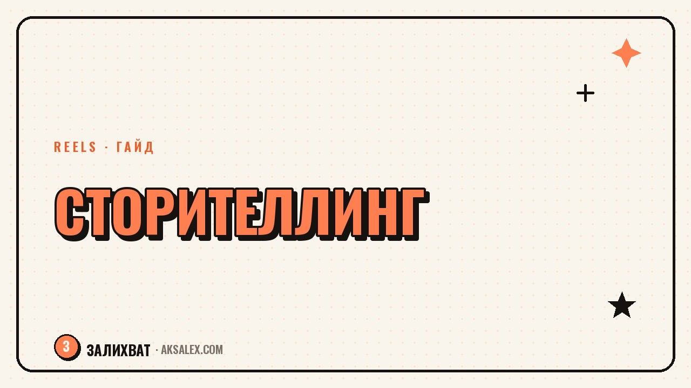

Storytelling in Reels: How to Keep Viewers Hooked

A good 30-second story is built differently than a story you'd tell over dinner. There's no time to warm up, but there's fierce competition for attention with the next video in the feed. Let's break down what parts make up a story in short format and which techniques actually keep viewers watching to the end instead of losing them halfway through.
How a short story differs from a regular story
In a short video, there's no introduction in the usual sense - the viewer either stays after the first few words or leaves. That means the setup and the conflict of the story need to happen almost at the same point, not spread across separate blocks the way they would be in an article or a podcast.
The second difference is density. There's no room in Reels for side plots or long descriptions - every line has to push the story forward or raise the tension.
Story structure for short format
- Entry point - a conflict or question in the first 2-3 seconds
- Escalation - a detail that raises the intrigue and stops people from swiping away
- Twist - an unexpected fact or a shift in expectations
- Resolution - the answer to the opening question, without dragging it out
- Takeaway or emotion - what the viewer walks away with
Not all five points are required in every video, but the entry point and resolution should always be there - without them, the story falls apart.
Attention-retention techniques
What actually works
- An open question at the start, answered only at the end
- A promise of a concrete result - "I'll show you how I did this in one day"
- A change of pace - fast speech during setup, a pause before the key moment
- A visual cut timed exactly with the plot twist
A viewer forgives a plain visual, but won't forgive a story with no tension - that's when a video turns into background noise.
Table: story elements and their role
| Element | Role in the video | Placement in timing |
|---|---|---|
| Entry point | Stops the scroll | 0-3 seconds |
| Escalation | Holds attention in the middle | 3-15 seconds |
| Twist | Brings attention back if it drifted | 15-25 seconds |
| Resolution | Gives a sense of completion | final seconds |
How to test a story before filming
Read the script out loud up to 10-15 seconds before the point where the twist is supposed to happen. If it's already boring to you at that point, it'll be boring to the viewer even sooner, because they don't have your involvement in the topic.
The second way to check is to remove any line from the script and see if the story falls apart. If the video's meaning doesn't change - that line was unnecessary, and cutting it makes room for something that actually moves the plot forward.
Common storytelling mistakes in Reels
The most common mistake is a drawn-out intro before the conflict, where the story only really starts at second 8-10. The second is skipping the resolution: the video cuts off at the climax with no answer, and the viewer leaves feeling unfinished rather than intrigued.
The third mistake is too many details unrelated to the core of the story. Every unnecessary detail is a chance for the viewer to get distracted and not watch to the end.
Frequently Asked Questions
How many seconds should pass before the conflict starts in a story?
Ideally 2-3 seconds. The longer the viewer waits for the point, the higher the chance they'll swipe away sooner.
Does every video need a resolution?
Yes, without one the story feels unfinished, even if the visuals and delivery were strong throughout the whole video.
How do you check a script for boring parts?
Read it out loud and cut any phrase that doesn't move the plot forward - if the meaning didn't change, the phrase was unnecessary.
Can you build a story without a twist?
You can for very short formats, but a twist significantly increases the chance viewers watch to the end, especially in videos longer than 20 seconds.
What matters more in storytelling - visuals or text structure?
Text structure comes first. A weak visual with a strong story still holds attention, but the reverse works worse.
not by hand